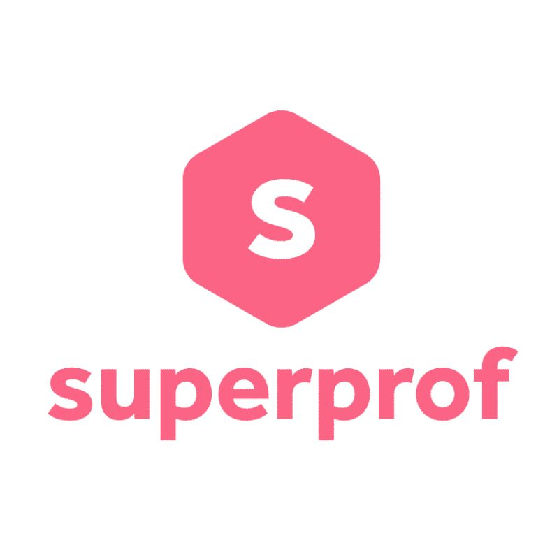
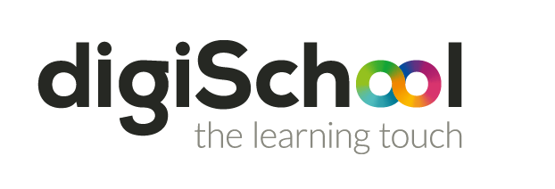

Vous pouvez ici trouver différents liens vers des sites vous permettant d'optimiser votre travail et vos révisions.
-

Superprof est une plateforme en ligne dédiée à la mise en relation de professeurs particuliers et d'élèves à la recherche de cours particuliers dans divers domaines. Lancé en 2013, Superprof s'est rapidement imposé comme un acteur majeur dans l'univers de l'éducation en ligne, en facilitant l'accès à des cours sur mesure dans une multitude de matières.
- 
Digischool est une plateforme éducative française qui propose des ressources et des services en ligne pour accompagner les élèves, étudiants, et professionnels dans leur parcours académique et leur développement personnel. Fondée en 2011, Digischool s'est rapidement imposée comme un acteur majeur dans l'univers de l'éducation numérique, offrant une multitude d'outils et de services pour répondre aux besoins variés de ses utilisateurs.